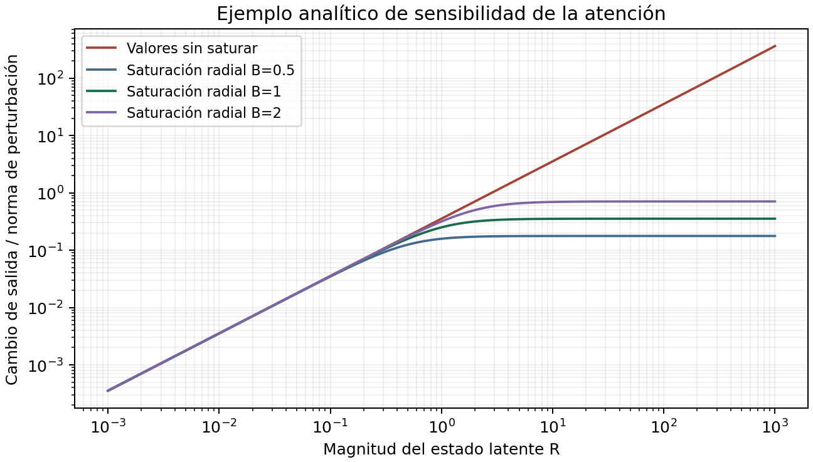

Bloque C y modelo neuronal candidato#
Estado al 15 de noviembre de 2026: formulación, demostración de una propiedad del mecanismo, implementación asistida por IA y verificación de software disponibles. El candidato conserva el problema BTCUSDT, D7×5 → σ₇, horizonte de un día. No se ha entrenado ni comparado sobre datos de mercado.
Estado de las tres condiciones#
Condición de la guía |
Evidencia de este avance |
Qué falta para acreditarla |
|---|---|---|
R1 Novedad para el fenómeno y la tarea |
Matriz de siete trabajos cercanos y lectura focal de dos originales; regla candidata definida con precisión. |
Búsqueda efectiva en tres bases, cierre de antecedentes y citas, comprobación de equivalencias y concepto de una persona externa. R1 sigue abierto. |
R2 Implementación algorítmica propia y defendible |
|
El autor debe revisar, comprender, explicar y modificar el código y la prueba. La asistencia de IA está declarada; el archivo por sí solo no certifica autoría ni defensa académica. |
R3 Superioridad verificada |
No hay resultados confirmatorios del candidato. |
HPO y presupuesto comparables, preregistro, semillas dimensionadas, toda la familia de rivales, tres pruebas por contraste y evaluación adicional. |
Limitación e hipótesis de desarrollo#
El estrés de entradas de E2 mostró degradación bajo corrupción artificial. Ese resultado motiva investigar sensibilidad a entradas alteradas; no demuestra una deficiencia económica real ni garantiza que la regla nueva la resuelva. Las perturbaciones de tensores pueden romper la coherencia OHLCV.
El mecanismo usa CNN causal → LSTM unidireccional → atención con penalización de discordancia y valores acotados. La hipótesis es que esa regla puede reducir sensibilidad frente al mismo backbone con atención por contenido convencional, sin empeorar el error limpio más allá del margen heredado. Debe comprobarse en desarrollo, incluidos extremos genuinos: penalizar discordancia o saturar estados podría ocultar un salto de volatilidad legítimo.
La limitación de calendario de TimeMixer medida en ETTh1 no se transfiere automáticamente a BTC sin esos marcadores. La ampliación metodológica actual de E2 conserva sus propios resultados y alcances. No se afirma que este candidato corrija por anticipado las limitaciones de todos los rivales.
El promedio causal incluye el estado presente. En la primera posición, su referencia coincide con el propio estado y la discordancia es ε; esa asimetría puede favorecer el primer día de la ventana. Es otra decisión que deberá contrastarse en desarrollo, junto con el riesgo de atenuar extremos.
Antecedentes y alcance de la revisión#
Se examinaron focalmente los originales de Kim, Papamakarios y Mnih (2021) y Dasoulas, Scaman y Virmaux (2021). Ambos son antecedentes directos de atención y propiedades Lipschitz. Una consulta aprendida y una cota, por separado, ya tienen antecedentes.
Las seis cadenas bilingües generaron 18 solicitudes a OpenAlex, Crossref y arXiv. Las 18 fueron denegadas por la política de red antes de ejecutar las búsquedas. El número de resultados es desconocido, no cero. Las ocho consultas GitHub y el examen de tres exportaciones heredadas no sustituyen la búsqueda exigida en tres bases. Tampoco se presenta un subagente de IA como la persona externa requerida.
Trabajo cercano |
Relación que debe distinguirse |
|---|---|
Kim et al., The Lipschitz Constant of Self-Attention |
Atención L2 entre pares y estabilidad: no toda atención se vuelve una contribución nueva por tener cota. |
Dasoulas et al., Lipschitz Normalization |
Consulta aprendida y normalización de scores; el candidato acota valores y añade discordancia, pero su novedad exacta está por verificar. |
TimeMixer |
El procesamiento multiescala ya tiene antecedentes. La diferencia debe ser de mecanismo. |
Luong et al., atención en traducción |
La atención por contenido es un componente convencional. |
Peng et al., CNN-LSTM con atención para tendencia cripto |
La familia híbrida y su uso en criptomonedas no se pueden presentar como inéditos. Su objetivo no se equipara a σ₇ sin revisar el original. |
CEEMDAN-RF-LSTM para volatilidad realizada |
Separar mecanismo y definición del objetivo; no comparar métricas de tareas distintas como si fueran homogéneas. |
HARNet |
La causalidad y los inductive biases para volatilidad ya tienen precedentes. |
La saturación \(T_B\) es también el gradiente de \(\phi_B(h)=B^2(\sqrt{1+\|h\|^2/B^2}-1)\), de forma pseudo-Huber radial. Esta identidad impide presentarla aislada como una función inventada aquí. No se atribuye una fuente histórica primaria no verificada. El registro completo distingue lecturas nuevas, heredadas y sólo metadatos. No se emite aún una declaración de novedad.
Formulación, demostración y algoritmo#
Estado: desarrollo teórico del candidato de E3. La propiedad demostrada corresponde a la cabeza que recibe estados latentes, con parámetros de inferencia fijos. No demuestra novedad bibliográfica, superioridad estadística ni una cota completa desde OHLCV crudo. La implementación asistida por IA y su comprensión deben declararse por separado.
1 Notación y dominio#
Una ventana contiene \(n\) barras anteriores al día objetivo, con \(m=5\) canales. En el problema principal, \(n=7\). El codificador CNN causal y LSTM unidireccional produce
La formulación siguiente usa cualquier \(H\) finito de ese espacio. Se emplea la norma euclídea para vectores, la norma de Frobenius para matrices de estados y la norma espectral para operadores. Los vectores \(q,w\in\mathbb R^d\) y el sesgo \(b\in\mathbb R\) son parámetros efectivos de inferencia.
Sea \(P\in\mathbb R^{n\times n}\) una matriz de promedio causal fija e independiente de \(H\). Para un promedio de anchura \(k\) que incluye el estado presente,
El prototipo puede usar \(k=3\) como configuración de desarrollo; no es una receta seleccionada experimentalmente ni un preregistro. Definimos \(A=I-P\) y \(r_j=(AH)_j\). Los hiperparámetros satisfacen
\(B\) es un radio escalar de saturación. \(\varepsilon\) suaviza la norma en la discordancia y evita división por cero en sus derivadas. La temperatura \(\tau\) y la intensidad \(\lambda\) son escalares independientes de la entrada durante inferencia. No se aplica este teorema a una temperatura, radio u operador de promedio que cambie con \(H\) sin volver a derivar la cota.
2 Mecanismo y salida#
La discordancia local, los puntajes y las ponderaciones son
Cada valor se transforma mediante la saturación radial
La agregación y la predicción escalada son
El término de contenido \(q^\top h_j\) es convencional. Las modificaciones candidatas son la penalización por discordancia y la saturación radial de los valores. Su combinación requiere revisión de antecedentes; escribir estas ecuaciones o programarlas no acredita por sí mismo R1.
La salida del modelo está en unidades \(\sigma_7/a_{\rm tr}\), donde \(a_{\rm tr}>0\) es la media del objetivo del entrenamiento permitido. La predicción en unidades originales es \(\widehat\sigma_7=a_{\rm tr}f(H)\); no se vuelve a estimar ese factor con validación o prueba.
3 Restricciones suaves de los parámetros#
Una implementación diferenciable que cumple las restricciones anteriores usa parámetros libres \(u_q,u_w,\theta_\lambda,\theta_\tau\):
Para parámetros libres finitos, \(\|q\|_2<Q\), \(\|w\|_2<W\), \(0<\lambda<\Lambda\) y \(\tau>\tau_{\min}\). La demostración permite también los extremos no estrictos, usados por las ablaciones. Las constantes \(Q,W,B,\Lambda,\tau_{\min}\) y \(\varepsilon\) forman parte de la configuración y deben guardarse con el estado del modelo; no son cotas que se presuman sin comprobar el código efectivo.
4 Lemas#
Lema 1 La saturación radial es 1 Lipschitz y acota los valores#
Para \(u=\sqrt{B^2+\|h\|_2^2}\),
En la dirección de \(h\) su autovalor es \(B^3/u^3\); en las direcciones ortogonales es \(B/u\). En \(h=0\) el jacobiano es \(I\). Todos los autovalores pertenecen a \((0,1]\), de modo que \(\|J_{T_B}(h)\|_2\le1\) para cualquier \(h\). Integrando el jacobiano sobre el segmento entre dos puntos,
Además,
Si \(V(H)\) es la matriz cuyas filas son \(v_j(H)^\top\), se sigue que
Lema 2 La discordancia es Lipschitz#
Puede escribirse \(d_j(H)=\|(r_j,\varepsilon)\|_2\). La desigualdad triangular inversa da
Al elevar al cuadrado y sumar por filas,
Por tanto,
\(\varepsilon>0\) asegura diferenciabilidad, pero no empeora esta cota.
Lema 3 Softmax tiene constante euclídea a lo sumo 1/2#
Para una distribución \(a=\operatorname{softmax}(u)\),
La suma absoluta de la fila \(j\) es
El jacobiano es simétrico, por lo que su norma espectral está acotada por su norma infinita. Así, \(\|J_{\rm softmax}(u)\|_2\le1/2\). La integración sobre segmentos demuestra que softmax es \(1/2\) Lipschitz en norma euclídea. Aplicando el escalado por temperatura y el Lema 2,
La prueba de este lema y las demás son autocontenidas; no se apela a una afirmación de estabilidad sin derivarla.
5 Teorema de estabilidad de la cabeza latente#
Teorema. Bajo los supuestos de las secciones 1 y 3, para cualesquiera \(H,H'\in\mathbb R^{n\times d}\) finitos y los mismos parámetros de inferencia,
donde
Demostración. Escribimos \(c(H)=V(H)^\top a(H)\) y descomponemos
Como \(a(H')\) es una distribución, \(\|a(H')\|_2\le1\). Aplicando los tres lemas y las desigualdades de normas,
La derivada de Softplus es sigmoid, perteneciente a \((0,1)\); por ello Softplus es 1 Lipschitz. La proyección escalar \(w^\top c+b\) tiene constante \(\|w\|_2\le W\). Componiendo ambas funciones se obtiene la cota enunciada. El sesgo fijo \(b\) se cancela al tomar diferencias. \(\square\)
Para el problema principal basta sustituir \(n=7\). La cota puede ser conservadora; no se afirma que sea la constante Lipschitz óptima. La derivación usa aritmética real. Los ensayos de coma flotante requieren rangos y tolerancias declarados; no prometen ausencia de overflow para cualquier flotante representable.
Corolario de rango de salida#
Como \(c\) es una combinación convexa de vectores de norma a lo sumo \(B\), se tiene \(\|c\|_2\le B\). Por tanto,
Este rango finito es una propiedad del modelo con pesos fijos, no una garantía de calibración. También muestra una limitación: radios o cotas demasiado restrictivos pueden impedir representar volatilidad extrema y agravar la infracobertura. El conjunto de desarrollo deberá evaluar esa posibilidad antes de congelar el diseño.
Escala original y límite de la afirmación#
En unidades de \(\sigma_7\), la constante es \(a_{\rm tr}C_{\rm head}\). Para deducir una cota respecto a la entrada preprocesada \(X\) sería necesario demostrar una constante \(L_E\) del codificador \(E\) y usar \(a_{\rm tr}C_{\rm head}L_E\). Para OHLCV crudo haría falta además controlar la transformación \(T\), sus rangos y su constante \(L_T\).
Aquí no se han cuantificado \(L_E\) ni \(L_T\). En particular, logaritmos, normalización y anclaje por el último cierre requieren rangos y escalas válidos; no se obtiene una cota global sobre todo OHLCV crudo por multiplicar constantes no demostradas. Que la cabeza tenga una cota no demuestra que el predictor completo sea más robusto que otro modelo, ni que reduzca la RMSE.
6 Derivadas y regla de actualización#
Para una observación sea \(\mathcal L=\ell(f(H),y^*)\) y \(\delta=\partial\mathcal L/\partial z\). Con la pérdida MSE de un lote de \(N\) observaciones,
la contribución de la observación \(i\) satisface
El escalado objetivo es fijo por entrenamiento: multiplicar esta MSE por \(a_{\rm tr}^2\) recupera la MSE en unidades originales sin cambiar su minimizador.
Para una observación definimos \(g=\delta w\), \(\kappa_j=g^\top v_j\) y
Los jacobianos de las partes centrales son
Aquí los gradientes de los escalares respecto a \(h_j\) se expresan como vectores columna. En consecuencia,
En forma matricial, si la fila \(i\) de \(D\) es \(\eta_i r_i^\top/d_i\), el último término es la fila \(j\) de \(-\lambda A^\top D\). Esta forma muestra el acoplamiento del promedio causal: no basta derivar cada \(d_j\) como si dependiera sólo de \(h_j\).
Para los parámetros efectivos,
Las restricciones suaves requieren la regla de la cadena. Para \(G_K(u)=Ku/\sqrt{1+\|u\|_2^2}\) y \(v=\sqrt{1+\|u\|_2^2}\),
Se aplica este jacobiano a los gradientes de \(q\) y \(w\). Además,
Los gradientes se propagan desde \(H\) a la LSTM y a la CNN mediante diferenciación automática. Una actualización SGD ilustrativa es \(\theta\leftarrow\theta-\alpha\nabla_\theta\mathcal L\); si se emplea AdamW, se guardarán su configuración y estado, y no se confundirá su decaimiento desacoplado con la derivada de esta MSE. La elección de optimizador, presupuesto y parada deberá ser comparable con los rivales en el protocolo definitivo.
7 Pseudocódigo#
Algoritmo 1 Predicción de una ventana#
Entradas: ventana \(X\in\mathbb R^{n\times5}\) estandarizada con estadísticas de entrenamiento, configuración, pesos del codificador y parámetros libres de la cabeza, escala \(a_{\rm tr}>0\). Salida: \(\widehat\sigma_7\).
Validar forma, tipo y finitud de \(X\); rechazar una ventana inválida antes de inferir.
Aplicar la CNN con relleno sólo por el lado histórico y producir sus \(n\) representaciones.
Recorrer la LSTM unidireccional de \(j=1\) a \(n\); conservar sus estados \(H\).
Construir los parámetros efectivos \(q,w,\lambda,\tau\) mediante las restricciones suaves.
Calcular \(R=(I-P)H\) y \(d_j=\sqrt{\|r_j\|_2^2+\varepsilon^2}\).
Calcular \(s=Hq-\lambda d\) y \(a=\operatorname{softmax}(s/\tau)\) con estabilización numérica por el máximo.
Calcular cada \(v_j=B h_j/\sqrt{B^2+\|h_j\|_2^2}\) y \(c=\sum_j a_jv_j\).
Devolver \(\widehat\sigma_7=a_{\rm tr}\operatorname{softplus}(w^\top c+b)\).
El algoritmo termina tras recorrer \(n\) estados y evaluar la cabeza. No recibe el objetivo del día pronosticado ni ejecuta optimización durante inferencia.
Algoritmo 2 Desarrollo y entrenamiento de una variante#
Entradas: particiones de entrenamiento y validación de desarrollo, configuración candidata, semilla, optimizador, máximo de épocas \(E\), paciencia \(p\) y criterio de mejora definidos antes de la ejecución. Salida: estado elegido por validación y registro completo de la variante.
Fijar generadores y configuración de determinismo sin alterar silenciosamente otros experimentos; inicializar los pesos en un contexto de RNG controlado.
Estimar las transformaciones exclusivamente en el entrenamiento permitido y guardar sus estadísticas.
Para cada época, optimizar la MSE sobre lotes de entrenamiento usando el Algoritmo 1 en escala de objetivo y las derivadas anteriores.
Evaluar en validación, sin actualizar pesos o transformaciones; conservar el estado con mejor criterio de validación y registrar las épocas.
Detenerse al alcanzar \(E\) o \(p\) épocas sin mejora, según la regla prefijada.
Guardar pesos, configuración, estado del optimizador cuando corresponda, semilla, curvas, tiempo y desenlace; registrar la variante en la bitácora y conservar fallos.
Este algoritmo describe el desarrollo. No fija una campaña confirmatoria ni autoriza usar los conjuntos adicionales para cambiar el mecanismo. La confirmación requiere diseño congelado, presupuesto común y preregistro previo; ninguna tabla de pruebas sintéticas lo sustituye.
8 Causalidad y complejidad#
La CNN y la LSTM unidireccional no necesitan posiciones posteriores para calcular un estado de un prefijo. \(P\) usa sólo estados hasta \(j\) para su promedio. Sin embargo, el denominador de softmax reúne todos los \(n\) estados: un peso \(a_j\) puede cambiar si cambia una posición posterior de la misma ventana. No se afirma causalidad por prefijo de los pesos de atención.
La causalidad por prefijo del encoder se refiere al tensor ya preprocesado. relative_window ancla todos los precios al último cierre conocido de la ventana; esa transformación no es invariante a modificar un sufijo de la ventana cruda. Esto no introduce el objetivo del día siguiente si toda la ventana termina antes de emitir el pronóstico, pero impide atribuir al pipeline crudo la propiedad por prefijo probada para el encoder.
La predicción del día \(t\) sigue siendo causal si las \(n\) barras de entrada pertenecen a días estrictamente anteriores a \(t\), las transformaciones están congeladas y ninguna variable de entrada contiene el objetivo aún no disponible. Esa disponibilidad temporal debe auditarse en el pipeline real, no deducirse únicamente de la arquitectura.
Para una CNN con \(L\) capas, anchuras \(c_0=5,c_1,\ldots,c_L\) y kernels \(k_\ell\), el coste por ventana es
Una LSTM con entrada \(c_L\) y estado \(d\) cuesta \(O\bigl(nd(c_L+d)\bigr)\). La cabeza con multiplicación densa por \(P\) cuesta \(O(n^2d)\), más \(O(nd)\) por puntajes, saturación y suma. Su memoria incluye \(O(n^2)\) para el operador y \(O(nd)\) para estados/valores. Con un promedio móvil realmente implementado mediante sumas acumuladas o bandas puede reducirse ese término; no se atribuye esa optimización a una implementación que materialice y multiplique la matriz densa.
Con \(B,Q,W,\Lambda,\tau_{\min},\varepsilon\) y \(P\) fijos, la cabeza completa tiene \(2d+3\) parámetros entrenables: \(u_q,u_w,b,\theta_\lambda,\theta_\tau\). El número total y los parámetros activos de cada ablación deben contarse desde el código. La retropropagación tiene el mismo orden asintótico que el forward para esta arquitectura de profundidad fija, con activaciones adicionales guardadas. FLOPs, memoria y tiempo empíricos deberán medirse; la notación \(O(\cdot)\) no los reemplaza.
9 Ablaciones y verificación numérica#
Las tres intervenciones funcionales propuestas mantienen el mismo codificador:
Variante |
Intervención aislada |
Qué permite examinar |
Alcance de la cota |
|---|---|---|---|
Sin penalización |
Forzar \(\lambda=0\) |
Aporte de la discordancia al reparto de pesos. |
Teorema válido con \(\Lambda_{\rm efectiva}=0\). |
Sin saturación |
Sustituir \(v_j\) por \(h_j\) |
Aporte del acotamiento de valores. |
No se aplica el teorema global enunciado con radio \(B\); no devolver esa constante como si siguiera demostrada. |
Sin contenido |
Forzar \(q=0\) y conservar la penalización |
Interacción entre contenido convencional y discordancia. |
Teorema válido con \(Q_{\rm efectivo}=0\). |
Son tres componentes aislados para estudiar el mecanismo. La tercera intervención examina un componente convencional; no constituye una tercera innovación. La comparación con una cabeza convencional de contenido lineal que retire simultáneamente las dos modificaciones es un control adicional, no otra ablación aislada. La admisibilidad y suficiencia del diseño frente a la guía deberán evaluarse con la revisión y el protocolo completos.
La verificación numérica debe registrar semilla, dtype, configuración y versión del código y comprobar al menos:
Gradcheck de doble precisión sobre la cabeza y comparación de gradientes analíticos/autodiferenciados en casos no degenerados.
Restricciones efectivas \(\|q\|_2\le Q\), \(\|w\|_2\le W\), \(\lambda\le\Lambda\) y \(\tau\ge\tau_{\min}\), incluso cerca de sus límites.
Cocientes \(|f(H)-f(H')|/\|H-H'\|_F\) para pares distintos en varias escalas y perturbaciones pequeñas, comparados con \(C_{\rm head}\); reportar máximo y cantidad de violaciones.
Normas del jacobiano en estados seleccionados y casos especiales, incluido \(H=0\), donde \(\varepsilon\) mantiene derivadas definidas.
Predicciones antes/después de guardar, cargar y exportar, con tolerancia explícita, además de pruebas de entrada inválida y gradientes de todos los parámetros activos.
Los ensayos finitos complementan la demostración; no demuestran por muestreo una propiedad universal ni sustituyen las comparaciones de RMSE contra todo el benchmark. Sus resultados se incorporarán desde ejecuciones verificadas, sin rellenar valores anticipados.
Verificación ejecutada del software#
La configuración de desarrollo tiene 1.211 parámetros y usa ocho canales de CNN y doce estados LSTM. Los valores B=1, Q=1, W=4, Λ=1 y τmín=0,25 son decisiones iniciales de software, no ganadores de HPO ni parámetros preregistrados. candidate_config.json y la bitácora conservan ese estado.
Se aprobaron 35 casos pytest sobre formas, entradas inválidas, reproducibilidad sin alterar el RNG global, causalidad del encoder, independencia entre muestras, gradientes de todos los parámetros activos, gradcheck double, restricciones de norma y tres ablaciones aisladas. La prueba diminuta ajusta ocho ejemplos artificiales durante 350 pasos de Adam; no es evidencia predictiva sobre BTC ni aporta R3.
El guardado/carga conserva salidas y la ida y vuelta TorchScript cumple tolerancias declaradas con lotes 1, 3 y 4. El trazado de LSTM avisa que algunas comprobaciones internas de dimensiones quedan como constantes: se requiere validate_input antes de invocar una traza. No se entrega ese test como modelo de mercado entrenado ni como exportación final.
Comprobación numérica de la cabeza latente |
Resultado |
|---|---|
Pares de estados artificiales, float64 |
256 |
Escalas de estados examinadas |
0.001 a 1000.0 |
Cota formal C_head para la configuración |
46.15606644 |
Mayor cociente de diferencias observado |
0.11516301 |
Pares que violaron la cota |
0 |
Error máximo de derivada manual frente a autograd |
6.939e-18 |
La desigualdad universal se justifica mediante la demostración, no por no encontrar violaciones en 256 pares. La cota es conservadora y sólo cubre la cabeza con parámetros fijos. Las pruebas numéricas no establecen estabilidad completa frente a OHLCV crudo, mejor RMSE, calibración o generalización entre mercados.
Ejemplo analítico de por qué importa acotar valores#

La figura aísla la saturación con dos estados \(H_R=((0,R),(0,-R))\), consulta y readout unitarios en ejes ortogonales, τ=1 y λ=0. Una perturbación fija añade ±10⁻⁴ al primer eje. Sin acotar valores, el cociente de cambio de salida crece con R; la saturación limita esa influencia en este ejemplo. Es un cálculo artificial ilustrativo, no un experimento de rendimiento del híbrido ni una comparación sobre datos financieros.
Uso y reproducción#
El código recibe ventanas ya preprocesadas de forma lote×7×5 y devuelve un escalar positivo en unidades de σ₇ dividido por la escala del objetivo de entrenamiento. El pipeline deberá aplicar el mismo preprocesamiento congelado por fold que los rivales e invertir la escala fuera del módulo.
from src.original_model import CandidateConfig, OriginalModel
model = OriginalModel(CandidateConfig(), seed=0)
# x debe ser un tensor de ventanas D7x5 ya transformadas y estandarizadas.
scaled_prediction = model(x)
Para ejecutar las pruebas y comprobar el informe guardado, desde la raíz del repositorio con Python 3.12:
python -m pip install -r requirements-e3-original-cpu.lock.txt
python -m pytest tests/test_original_model.py -q
python scripts/e3_verify_original.py --check
El workflow verify-e3-original.yml ejecuta esas verificaciones en CPU. El informe conserva hashes de código, tests, dependencias y demostración. La creación de un informe nuevo requiere una ejecución pytest aprobada; los comandos de este capítulo no consultan mercado, no hacen HPO y no registran una campaña confirmatoria.
Evidencias descargables#
Qué falta antes de cerrar el Bloque C#
Completar R1 y su revisión humana externa; examinar con el autor la procedencia y comprensión de R2; comprobar el mecanismo y sus tres ablaciones con datos reales de desarrollo; medir complejidad empírica e interpretabilidad con fidelidad; y congelar diseño, presupuesto y protocolo antes de la evaluación definitiva. También falta conectar y verificar el módulo en el ejecutor de entrenamiento común: compartir forma de entrada y escala de salida no acredita esa integración. La comparación debe incluir todo el Top 10 y todos los baselines fuertes con el mismo tratamiento experimental.
La atención por sí sola no se presenta como explicación causal. Las métricas de los futuros tres datasets adicionales, la potencia, las semillas y R3 continúan sin ejecutarse. Los resultados adversos y la posible pérdida en extremos deberán conservarse. Este avance fue elaborado con asistencia de IA en código, teoría, revisión focal y documentación; no acredita por sí mismo la comprensión y defensa del estudiante.